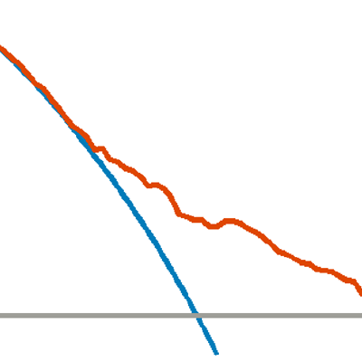

gtsummary 
Language R
The {gtsummary} package provides an elegant and flexible way to create publication-ready analytic and summary tables using the R programming language. The {gtsummary} package summarizes data sets, regression models, and more, using sensible defaults with highly customizable capabilities.
Summarize data frames or tibbles easily in R. Perfect for presenting descriptive statistics, comparing group demographics (e.g creating a Table 1 for medical journals), and more. Automatically detects continuous, categorical, and dichotomous variables in your data set, calculates appropriate descriptive statistics, and also includes amount of missingness in each variable.
Summarize regression models in R and include reference rows for categorical variables. Common regression models, such as logistic regression and Cox proportional hazards regression, are automatically identified and the tables are pre-filled with appropriate column headers (i.e. Odds Ratio and Hazard Ratio).
Customize gtsummary tables using a growing list of formatting/styling functions. Bold labels, italicize levels, add p-value to summary tables, style the statistics however you choose, merge or stack tables to present results side by side… there are so many possibilities to create the table of your dreams!
Report statistics inline from summary tables and regression summary tables in R markdown. Make your reports completely reproducible!
Installation Code: install.packages("gtsummary")
More information at http://www.danieldsjoberg.com/gtsummary/
Decision Curve Analysis 
Languages R, Stata, SAS
Decision-analytic techniques allow assessment of clinical outcomes but often require collection of additional information may be cumbersome to apply to models that yield a continuous result. Decision curve analysis is a method for evaluating and comparing prediction models that incorporates clinical consequences, requires only the data set on which the models are tested, and can be applied to models that have either continuous or dichotomous results.
- R Package
- Installation Code:
install.packages("dcurves") - More information at http://www.danieldsjoberg.com/dcurves/
- Installation Code:
- Stata
- Installation Code:
net install dca, from(https://raw.github.com/ddsjoberg/stata.dca/master/) replace
- Installation Code:
- SAS
Source Functions:
filename dca url "https://raw.githubusercontent.com/ddsjoberg/dca.sas/main/dca.sas"; filename stdca url "https://raw.githubusercontent.com/ddsjoberg/dca.sas/main/stdca.sas"; %include dca; %include stdca;
Vickers AJ, Elkin EB. “Decision curve analysis: a novel method for evaluating prediction models.” Medical Decision Making. 2006 Nov-Dec;26(6):565-74.
Steyerberg EW, Vickers AJ. “Decision curve analysis: a discussion.” Medical Decision Making. 2008 Jan-Feb;28(1):146-9.
Vickers AJ, Cronin AM, Elkin EB, Gonen M. “Extensions to decision curve analysis, a novel method for evaluating diagnostic tests, prediction models and molecular markers.” BMC Medical Informatics and Decision Making. 2008 Nov 26;8(1):53.
starter
Language R
Get started with new projects by dropping a skeleton of a new project into a new or existing directory, initialise git repositories, and create reproducible environments with the ‘renv’ package. The package allows for dynamically named files, folders, file content, as well as the functionality to drop individual template files into existing projects.
Installation Code: install.packages("starter")
More information at http://www.danieldsjoberg.com/starter/
rstudio.prefs
Language R
As of RStudio v1.3, the preferences in the Global Options dialog (and a number of other preferences that aren’t) are now saved in simple, plain-text JSON files. This package provides an interface for working with these RStudio JSON preference files to easily make modifications without using the point-and-click option menus. This is particularly helpful when working on teams to ensure a unified experience across machines and utilizing settings for best practices.
Installation Code: install.packages("rstudio.prefs")
More information at http://www.danieldsjoberg.com/rstudio.prefs/